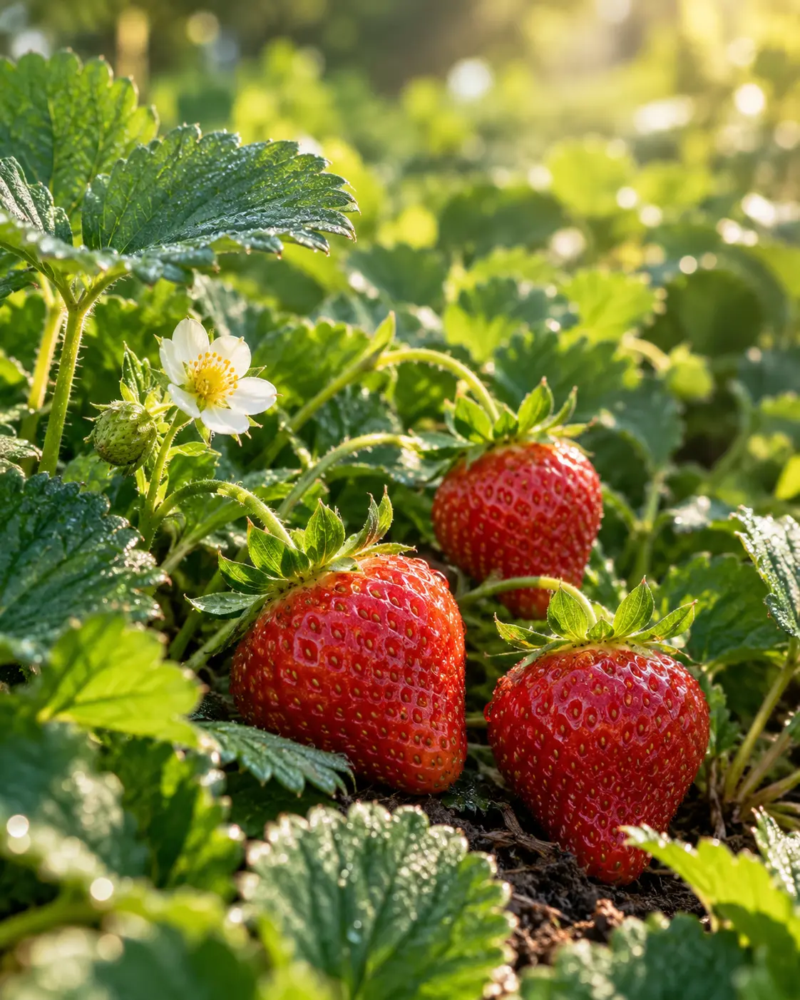
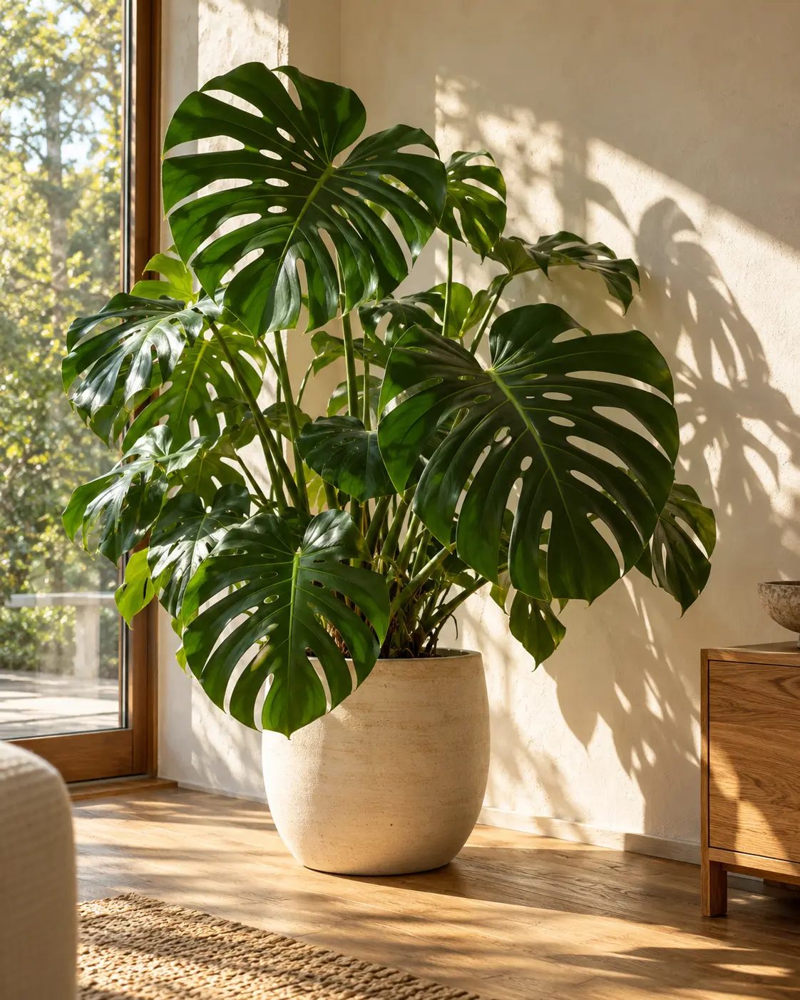

СРОКИ☀
☀
Сроки по заморозкам
вашего посёлка.
Укажите посёлок — приложение возьмёт даты весенних и осенних заморозков и рассчитает сроки посева и высадки, а не «по средней полосе».
«Агроном рядом» считает сроки посева и высадки по датам заморозков именно вашего участка и накануне предупреждает о заморозке. Сделано в Красноярске под короткий сибирский и уральский сезон.
Календари и советы обычно пишут для средней полосы. У нас заморозки бывают до середины июня и возвращаются в конце августа: ошибка на неделю стоит рассады или урожая.


Огород, теплица, сад и комнатные растения — в одном приложении. Без регистрации, основное работает без интернета.
Укажите посёлок — приложение возьмёт даты весенних и осенних заморозков и рассчитает сроки посева и высадки, а не «по средней полосе».
Заморозок, жара или погода, опасная для фитофтороза, — за 1–2 дня, с советом, что сделать.
Работы на неделю, план рассады, заметки, фото, сорта и грядки — в одном месте.
Сфотографируйте лист или опишите признаки — подскажем возможную причину и что делать. Справочник болезней и вредителей с источниками. Результат требует проверки.
Приложение сделано в Красноярске под сибирский сезон: посадить вовремя, укрыть заранее, сохранить урожай.
Развиваем цифровые продукты и устройства, которые делают заботу о природе и хозяйстве понятнее.
Сад, календарь, дневник, знания и помощь по фотографии.
К приложению ↗Инкубация по дням, учёт стада и себестоимость яиц, справочник птицевода. Перепела, куры, утки, гуси, индейки.
К приложению ↗Разработка интеллектуальных контроллеров и автоматизации.
Самое важное перед первым знакомством с приложением.
Для дачников и садоводов, особенно в Сибири и на Урале, где сезон короткий, а заморозки поздние. И для любителей комнатных растений — от начинающих до опытных.
Локальные записи и встроенные справочные материалы доступны без сети. Свежая погода и анализ фотографии требуют подключения.
Приложение помогает предположить возможные причины. Это не окончательный диагноз: сверяйте рекомендации с состоянием растения и инструкциями к препаратам.
Приложение опубликовано в RuStore — ставьте оттуда, обновления будут приходить сами. Новая версия устанавливается поверх прежней, записи и фото сохраняются. Чтобы перенести сад на другой телефон, сохраните копию в приложении: «Настройки» → «Копия сада».
На текущем этапе приложение разрабатывается для Android. iOS-версия не опубликована.
«Агроном рядом» — ваш цифровой помощник на пути от первого ростка до урожая.
Приложение подписано ключом ООО «ДС-Финанс». Справочник болезней и вредителей можно посмотреть и без установки: agronom-ryadom.ru/spravochnik.